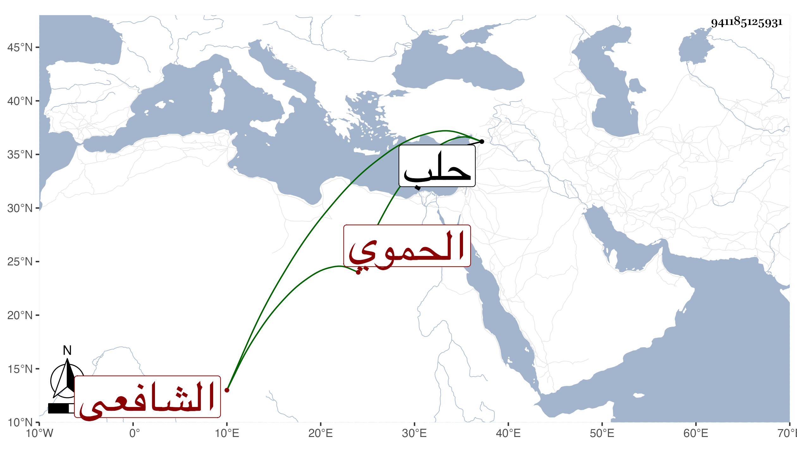

0902Sakhawi.DawLamic.ITO20230111-ara1.EIS1600.941185125931
Biography ID: 941185125931
28
أبو بكر بن إبرهيم بن علي بن عبد السيد بن أحمد التقي بن البرهان بن العلاء الحموي الشافعي تلميذ ابن حجة ويعرف بابن الصواف . لقيه النجم بن فهد بحلب في سنة سبع وثلاثين وكتب عنه قوله
| رأيت يوما رجلا أحمقا | قد أماته القل والفقر |
| لم يمتلك والله ملوطة | وعنده مع فقره كبر |
